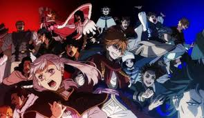
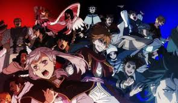

" قد يكون Black Clover في منتصف فجوة كبيرة حيث يستعد صانع السلسلة للقوس الأخير من السلسلة ، والآن يقوم أحد الأزياء التنكرية الرائعة بملء الفراغ من خلال وضع Vanessa Enoteca العودة إلى دائرة الضوء! انتهى عرض الأنمي العام الماضي ، والآن تستعد المانجا للقيام بنفس الشيء في العام لاحقًا ، حيث اختفى مبتكر المسلسل يوكي تاباتا رسميًا في فجوة طويلة من أجل تجهيز كل شيء لـ القوس الأخير من السلسلة القادمة. هذا يعني أن المعجبين يقومون الآن بالعد التنازلي لـ أيام حتى ينتهي كل شيء. عندما رأينا أعضاء فرقة بلاك كلوفر لآخر مرة ، تمكنوا من النجاة بالكاد من أصعب المعارك في المسلسل حتى الآن أخذوا الشياطين الثلاثة الكبار في العالم السفلي في أ حرب ضخمة. لكن مع القوس الأخير يكشف عن ذلك لا يزال هناك شرير واحد يجب الاعتناء به (أحدهم كلها قريبة جدًا من) ، من الصعب تخمين ماذا من أحد أعضاء بلاك كلوفر على وجه الخصوص مع تأثيري رائع لفانيسا إينوتيكا! تحقق من ذلك أدناه:" سيحدث لكل منهم. الآن يتم عرض الفنانmaywedacosplay


 
